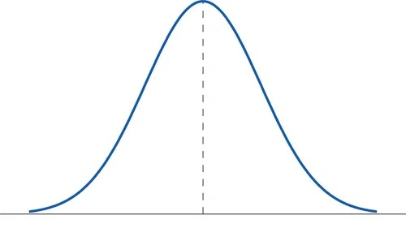

13 Summary statistics with dplyr
There is a function in the dplyr package called summarise() that is very useful for calculating summary statistics, particularly on multiple groupings of data (also called “subsets”).
summarise() will perform any calculation that you tell it to on your dataset. Today, we’ll use it to calculate the median - using the median() function. However, it can also calculate means, standard errors, or any mathematical formula that you can express as code in R.
NOTE: We are using medians instead of means because all of the data are very skewed to one direction! Means are only appropriate when the data look something like the symmetrical, hump-shape shown below (called a Normal distribution).

To tell R to subset the data by location (i.e. Lancaster vs. non-Lancaster), we’ll include another function first: group_by(). This will tell summarise() to do the calculations separately for each location.
When we calculate summary statistics with summarise(), we’ll want to save the output as a new data frame and pipe in the data frame with all of the original observations.
Afterwards, we can either examine the output by clicking on it in our Environment pane, or by printing it to the console with the print() function as shown here.
Type the following code in your script and run it.
Important!
Note in the code block below that you are using the pipe operator |> to pass versions of a data frame down from the top through different functions in a vertical stack.
Technically speaking, the pipe passes the output of the previous function into the first argument of the next. So c(1,2,3) |> exp() |> mean() is the same as mean(exp(c(1,2,3)))!
It is very common to write tidyverse R code (i.e. code from the dplyr, tidyr, and `ggplot2 packages) using pipes.
# Calculate the medians by location
EDM_summary <- data_EDM_all |>
group_by(location) |>
summarise(median_counted_spills = median(Counted_Spills))
print(EDM_summary)
#> # A tibble: 2 × 2
#> location median_counted_spills
#> <chr> <int>
#> 1 Lancaster NA
#> 2 Non-Lancaster NAQuestion: Do you notice anything unexpected about the data?
13.1 Removing NAs
The results above show NA instead of the median values we expected.
NA stands for “Not available” and means that there are missing values in our data.
Luckily there is an argument - na.rm = TRUE - that you can add to the median() function to make it ignore any missing values.
NOTE: This argument is not available for all functions, so the ideal situation is that your data should have no NAs to begin with!
Add the argument now and re-run the code.
Warning! Remember that you need to add include a comma between every argument that you give to a function!
13.2 Adding the other variables
Once you have your code working to calculate the median for the counted spills column, add additional median_x = median(x) arguments to the summarise() function to calculate the median values for the other three variables:
- long-term spill average
- spill duration
- percent of time operational
Warning!
Make sure you add the new median arguments inside the right set of brackets! They each need to be:
- inside the
summarise()function - outside the previous
median()function
By the end, you should have an EDM_summary data frame that looks something like this:
| location | median_counted_spills | median_LTA_spill_count | median_spills_dur_hrs | median_perc_time_operational |
|---|---|---|---|---|
| Lancaster | 9.5 | 19.63 | 14.235 | 100.00 |
| Non-Lancaster | 21.0 | 29.00 | 38.585 | 99.29 |
13.3 Answering the research questions
Now that you have your summarised data output, you should be able to answer our research questions from the beginning.
Research Questions:
How do the frequency and duration of sewage spills in the Lune river in Lancaster compare to the rest of the United Utilities area?
How do the frequency and duration of sewage spills in the Lune river in Lancaster in 2024 compare to its long-term average (2020-2024)?